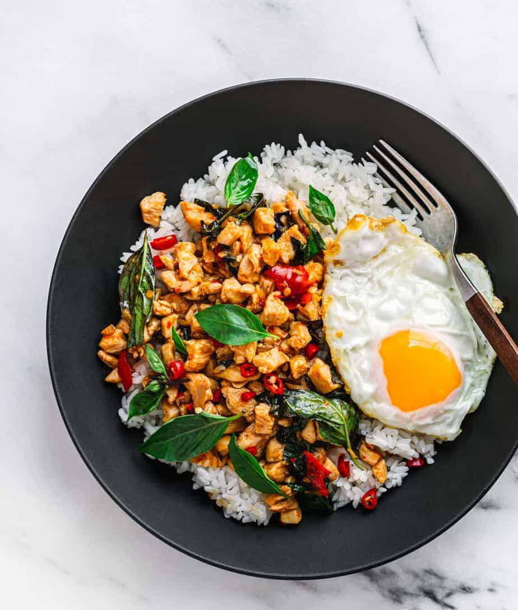

Pad Khra Pao

Description
Also known as Thai basil chicken, this recipe packs quite some heat. Divinely delicious with some hot, steamed rice, the Thai basil provides a stronger flavour and a subtly different texture than conventional basil. However they are easily interchangeable.
For those less-initiated with spicy food, consider omitting the birds' eye chilli or substituting them with the less spicy variants!
Ingredients
- 400g minced chicken or diced chicken breast
- 3 tbsp oyster sauce
- 4 tbsp sweet soy sauce
- 2 tsp fish sauce
- 5 cloves garlic, minced
- 5-10 birds' eye chillies, sliced
- a handful of thai basil, or about 20-25 leaves
- salt, sugar, and pepper to taste
- cooking oil
- 2 large eggs
Steps
- Prep: Start cooking white rice first so it's ready to serve with the dish.
- Heat some oil in the wok. When sufficiently hot (bubbling), lower heat to low and add minced garlic and birds' eye chillies. Stir for about 1 minute or until fragrant.
- Add chicken and increase heat. Mix them thoroughly and stir until the chicken is cooked through, about 3 to 4 minutes.
- Add in the sauces: oyster sauce, soy sauce, and fish sauce. Mix well and let simmer for a minute.
- Toss in the thai basil and mix until the leaves are wilted. Season to taste and place off-heat.
- In a separate pan, fry a couple of eggs sunny side-up.
- Place fried egg over a bed of rice and the chicken mixture to the side. Serve hot!